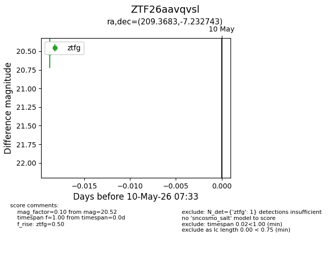
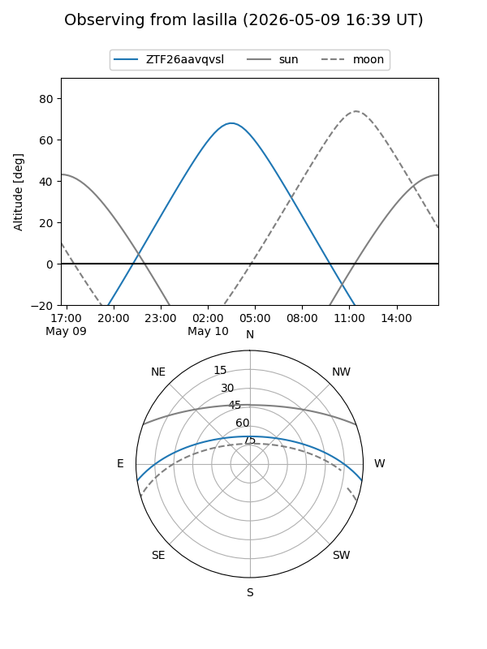
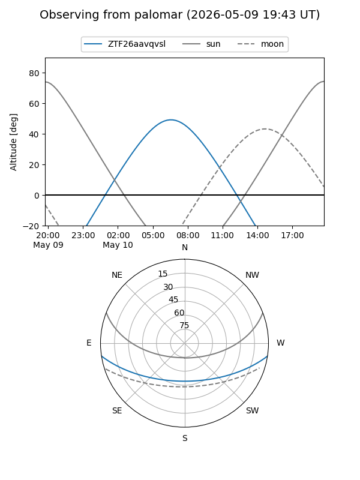

ZTF26aavqvsl
Target ZTF26aavqvsl at 2026-05-10 07:34
Aliases and brokers:
FINK: link
Lasair: link
ALeRCE: link
alt names
ZTF26aavqvsl (ztf,fink_ztf)
Coordinates:
equatorial (ra, dec) = 209.3683,-7.23274
equatorial (HMS+DMS) = 13:57:28.38,-07:13:57.88
galactic (l, b) = (330.2497,+52.10159)
Flags:
Photometry:
last ztfg=20.52
1 ztfg detections
Lightcurve

Visibility


Additional plots